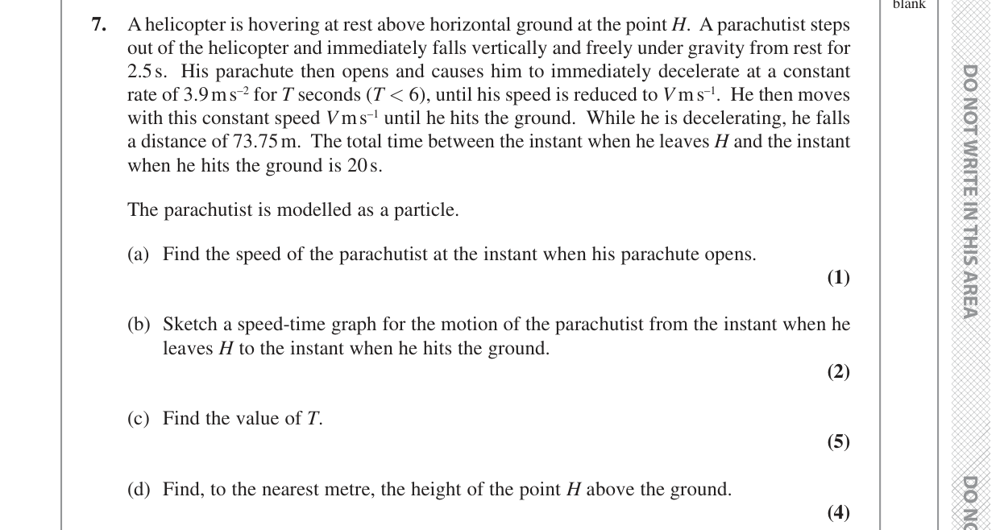

PMT 16 7. A helicopter is hovering at rest above horizontal ground at the point H. A parachutist steps out of the helicopter and immediately falls vertically and freely under gravity from rest for 2.5 s. His parachute then opens and causes him to immediately decelerate at a constant rate of 3.9 m s–2 for T seconds (T < 6), until his speed is reduced to V m s–1. He then moves with this constant speed V m s–1 until he hits the ground. While he is decelerating, he falls a distance of 73.75 m. The total time between the instant when he leaves H and the instant when he hits the ground is 20 s. The parachutist is modelled as a particle. (a) Find the speed of the parachutist at the instant when his parachute opens. (1) (b) Sketch a speed-time graph for the motion of the parachutist from the instant when he leaves H to the instant when he hits the ground. (2) (c) Find the value of T. (5) (d) Find, to the nearest metre, the height of the point H above the ground. (4) PMT 17 PMT 18 PMT 19 Question 7 continued
(a) Find the speed of the parachutist at the instant when his parachute opens.
*Thought Process:*
This is a standard constant acceleration problem (SUVAT) for the initial free-fall phase. We are given the initial speed (from rest), acceleration (gravity), and time. We need to find the final speed.
*Working:*
Let $u$ be the initial speed, $v$ be the final speed, $a$ be the acceleration, and $t$ be the time.
Given:
Initial speed, $u = 0 \text{ m s}^{-1}$ (falls from rest)
Acceleration due to gravity, $a = 9.8 \text{ m s}^{-2}$
Time, $t = 2.5 \text{ s}$
Using the SUVAT equation $v = u + at$:
$$v = 0 + (9.8)(2.5)$$
$$v = 24.5 \text{ m s}^{-1}$$
(b) Sketch a speed-time graph for the motion of the parachutist from the instant when he leaves H to the instant when he hits the ground.
*Thought Process:*
The motion has three distinct phases: constant acceleration (free fall), constant deceleration, and constant speed. Each phase will be represented by a straight line segment on the speed-time graph. We need to identify the start and end points of each segment.
*Working:*
The graph thus consists of three connected straight line segments, forming a shape similar to a trapezium when the x-axis is considered one of its parallel sides.
(c) Find the value of T.
*Thought Process:*
This part focuses on the deceleration phase. We know the initial speed for this phase (from part a), the constant acceleration (deceleration), and the distance covered. We can use the SUVAT equation $s = ut + \frac{1}{2}at^2$ to set up an equation for $T$. Remember that deceleration means the acceleration value should be negative.
*Working:*
For the deceleration phase:
Initial speed, $u = 24.5 \text{ m s}^{-1}$ (from part a)
Acceleration, $a = -3.9 \text{ m s}^{-2}$ (negative due to deceleration)
Distance fallen, $s = 73.75 \text{ m}$
Time duration, $t = T \text{ s}$
Using $s = ut + \frac{1}{2}at^2$:
$$73.75 = (24.5)T + \frac{1}{2}(-3.9)T^2$$
$$73.75 = 24.5T - 1.95T^2$$
Rearrange this into a quadratic equation:
$$1.95T^2 - 24.5T + 73.75 = 0$$
Solve using the quadratic formula $T = \frac{-b \pm \sqrt{b^2 - 4ac}}{2a}$:
$$T = \frac{-(-24.5) \pm \sqrt{(-24.5)^2 - 4(1.95)(73.75)}}{2(1.95)}$$
$$T = \frac{24.5 \pm \sqrt{600.25 - 575.25}}{3.9}$$
$$T = \frac{24.5 \pm \sqrt{25}}{3.9}$$
$$T = \frac{24.5 \pm 5}{3.9}$$
This gives two possible values for $T$:
$$T_1 = \frac{24.5 + 5}{3.9} = \frac{29.5}{3.9} \approx 7.56 \text{ s}$$
$$T_2 = \frac{24.5 - 5}{3.9} = \frac{19.5}{3.9} = 5 \text{ s}$$
The question states that $T < 6$. Therefore, we must reject $T_1 \approx 7.56 \text{ s}$.
So, the value of $T$ is $5 \text{ s}$.
(d) Find, to the nearest metre, the height of the point H above the ground.
*Thought Process:*
The total height above the ground is the total distance covered by the parachutist. On a speed-time graph, this total distance is represented by the total area under the graph. We will sum the areas for each of the three distinct phases of motion. First, we need to calculate the speed $V$ at the end of the deceleration phase.
*Working:*
First, find the speed $V$ at the end of the deceleration phase (which is also the constant speed for the final phase).
For the deceleration phase: $u = 24.5 \text{ m s}^{-1}$, $a = -3.9 \text{ m s}^{-2}$, $T = 5 \text{ s}$ (from part c).
Using $v = u + at$:
$$V = 24.5 + (-3.9)(5)$$
$$V = 24.5 - 19.5$$
$$V = 5 \text{ m s}^{-1}$$
Now, calculate the distance for each phase (area under the graph):
Phase 1 (Free fall): This is a triangle.
Duration = $2.5 \text{ s}$. Max speed = $24.5 \text{ m s}^{-1}$.
Distance $s_1 = \frac{1}{2} \times \text{base} \times \text{height} = \frac{1}{2} \times 2.5 \times 24.5 = 30.625 \text{ m}$
Phase 2 (Deceleration): The distance for this phase is given in the question.
Distance $s_2 = 73.75 \text{ m}$
Phase 3 (Constant speed): This is a rectangle.
Time duration = Total time - (Time for Phase 1 + Time for Phase 2)
Time duration = $20 - (2.5 + T) = 20 - (2.5 + 5) = 20 - 7.5 = 12.5 \text{ s}$
Constant speed = $V = 5 \text{ m s}^{-1}$
Distance $s_3 = \text{speed} \times \text{time} = 5 \times 12.5 = 62.5 \text{ m}$
Total height $H = s_1 + s_2 + s_3$
$$H = 30.625 + 73.75 + 62.5$$
$$H = 166.875 \text{ m}$$
Rounding to the nearest metre:
$$H \approx 167 \text{ m}$$